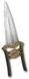

Heyday

Sabertooth
Wrist Spike
Damage: 13-27
Required Level: 56
+150-175% Enhanced Weapon Damage
+20-40 to Minimum Damage
+50-90 to Maximum Damage
+1-3 to Shadow Disciplines
+1 to Assassin Skill Levels
+25-35% Cold Resistance
Replenish +15 Life per 10 Seconds
+15 to Strength
Physical Damage Reduced By 10-15
Unique Assassin Claw
Sabertooth
- Type
- Assassin Claw
- Base
- Wrist Spike
- Tier
- Exceptional
- Required level
- 56
- Item level
- 46
- Required strength
- 66
- Required dexterity
- 66
- Max sockets
- 2
- Class
- Assassin only